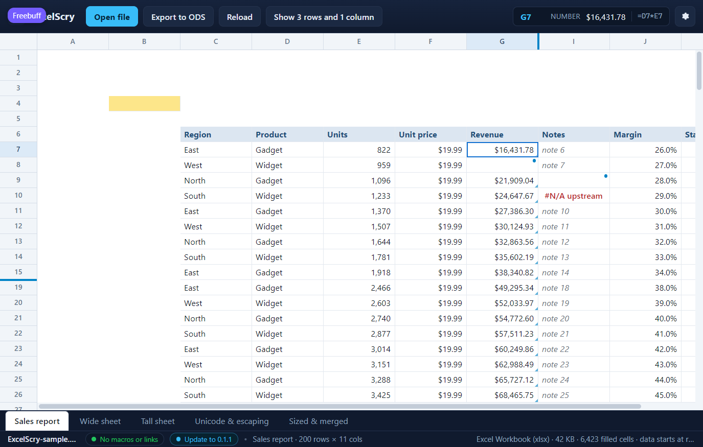

<!doctype html>
<meta charset="utf-8">
<title>ExcelScry — what a calculated cell is calculated from</title>
<style>
  body { margin: 0; background: #1b1d22; color: #c9cdd6;
         font: 14px/1.5 Segoe UI, system-ui, sans-serif; }
  figure { margin: 0; }
  img { display: block; width: 100%; height: auto; }
  figcaption { padding: 12px 16px; }
  code { color: #8fd3ff; }
</style>
<figure>
  
  <figcaption>
    The <code>Revenue</code> column is calculated rather than typed, and the
    grid says so: each such cell carries a small triangle in its bottom-right
    corner, and selecting one puts the formula beside the value it produced —
    <code>G7</code>, <code>$16,431.78</code>, then <code>=D7*E7</code> in a
    monospaced aside. Hovering the cell shows the same formula, so a total can
    be told from a number somebody typed without leaving the sheet. A formula
    is shown with one leading <code>=</code> whatever syntax the file uses —
    Excel's <code>D7*E7</code> or an ODS's <code>of:=D7*E7</code> — while what
    the export writes stays the reader's own text. (Shown in the UI harness,
    whose mock Revenue column carries a formula in the fifth slot beside the
    cell's kind, text, look and hidden value.)
  </figcaption>
</figure>
